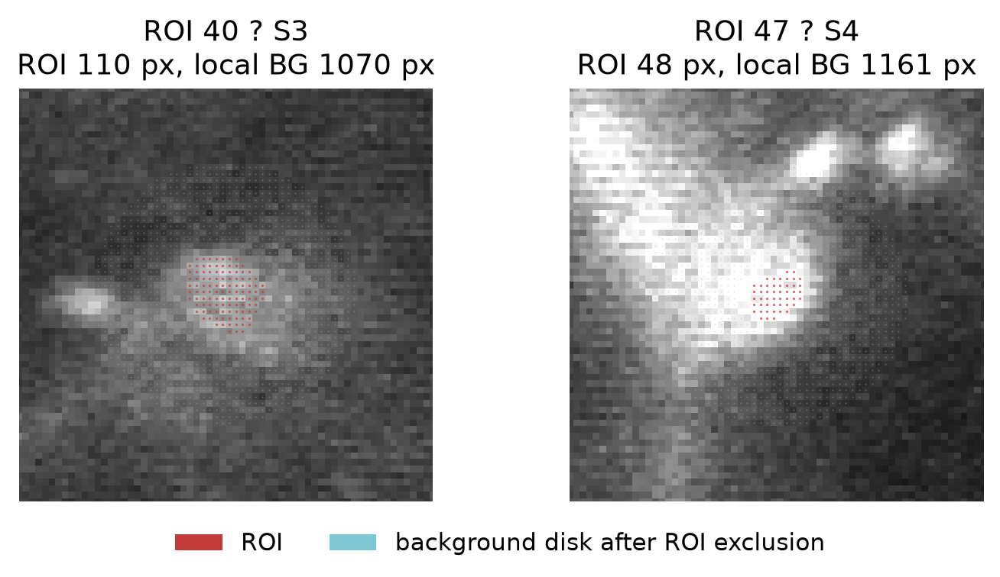
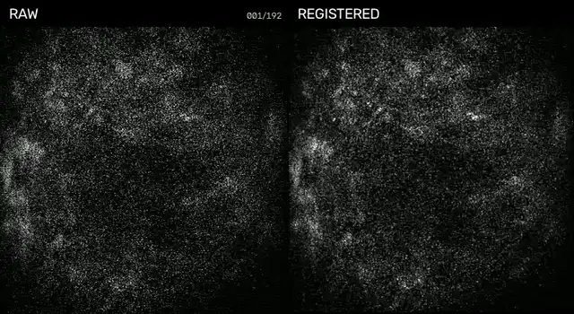
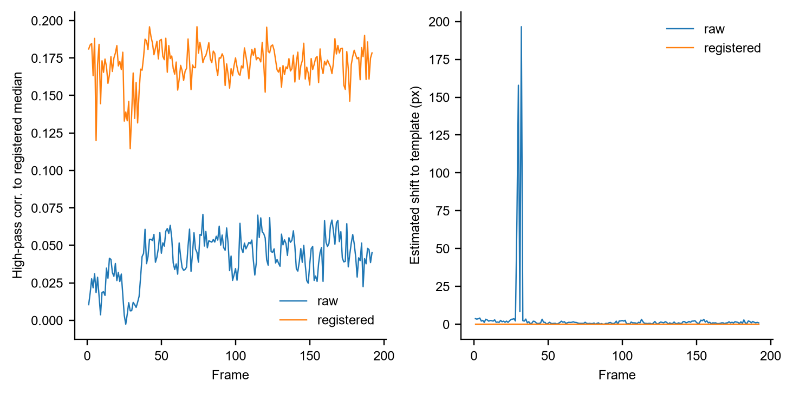

Background correction is now an explicit biological sensitivity analysis
Historical corrected traces are reproducible, but no corrected trace is allowed to define biology by itself. Raw ROI, exact CaRMA v3 background correction and Suite2p-style neuropil correction are carried in parallel.
Exact CaRMA v3 versus Suite2p across source-auditable recordings
ExtractVOlResp_SubRing_v3 uses a 20-pixel centroid disk, excludes all cell masks plus a 2-pixel margin, and subtracts the background mean with coefficient 1.0. This exact geometry reproduces frozen historical D6 checkpoints at r=1.000. The previously tested immediate 2-pixel ring is rejected.
Open the full all-animal extraction audit ?
D6 shows why raw signal must still be retained

What the historical background actually contains

CaRMA v3 samples a broad local field around each soma while excluding detected cell masks. It therefore includes neuropil, processes and potentially other local event-locked fluorescence.
| D6 quantity | Result |
|---|---|
| ROI40 raw condition effect | 0.649 |
| ROI40 CaRMA background effect | 1.417 |
| ROI40 CaRMA-v3 corrected effect | 0.277 |
| ROI40 Suite2p corrected effect | 0.391 |
Frame-level registration QC
The player now has an animated WebP fallback and an H.264/yuv420p MP4. The frame sequence uses real raw and registered D6 frames, not a mean-image surrogate.

D6 S3 Trial 1, 192 frames. High-pass frame-to-reference similarity increases from mean r=0.042 before registration to r=0.171 after registration.

Registration is visibly improved but residual non-rigid and z/intensity variation remains. Registration QC therefore stays separate from signal-extraction QC.
Across-condition extraction sensitivity
Eight sessions have independently verified trial-by-trial condition labels, including cue256/cue512, 100E/20E, 100E/50E and 100E/100E+Q. The full animal audit now separates method-driven sign changes from effects already near zero, so a sign reversal is not automatically interpreted as deletion of a robust neuronal response.
Full per-cell signal-source results
Current authority rule
D6 per-cell event table ? All-session method table ? Daily same-cell matrix ? Back to pipeline